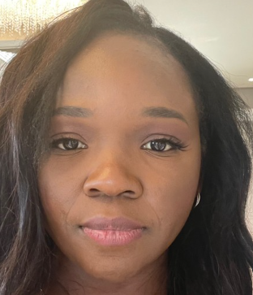

Christiane Diane Mefo Tefo

El Casar, Guadalajara, Spain 19140
tefodiane@gmail.com
+39 340 882 3398
LinkedIn Profile
Professional Summary
Dedicated and results-driven Automation Engineer and Microsoft IT Consultant with over a decade of experience in plant automation, cloud solutions, and system integration. Proven track record in diagnosing technical issues, developing innovative automation solutions, and enhancing operational efficiencies. Strong background in collaboration with cross-functional teams to deliver high-quality service and support to clients. Multilingual professional with expertise in various programming languages and automation software.
Professional Experience
DAROMATE SPA
Beauty Center
Marketing and Operations Manager (Volunteer)
Yaoundé, Cameroon
Nov 2024-Present
- Overseeing marketing strategies and operational efficiency for the beauty center.
- Collaborating with the team to enhance customer engagement and brand awareness.
- Developing and implementing promotional campaigns to attract new clients.
ALTITUDO
End-to-end systems integrator specialized on Microsoft platforms
Microsoft IT Consultant
villorba, Italy
Jul 2022-Feb 2023
- Resolved customer issues by collaborating with IT developers to implement effective solutions.
- Engaged in a customer-facing role focused on cloud solutions.
INERATEC
Sustainable e-fuels and synthetic chemicals producer
Automation Engineer
Karslruhe, Germany
Mar 2020-Aug 2020
- Identified and proposed innovative solutions for the PC SIMATIC WinCC project.
- Conducted testing, troubleshooting, and commissioning of PLC S7 programming.
- Diagnosed and rectified machinery errors remotely, ensuring operational efficiency
SIEMENS
German multinational technology conglomerate
Automation Support Consultant
Padua, Italy
Mar 2012-Jul 2019
- Provided support for customers on plant automation solutions and data visualization software.
- Collaborated with sales teams in quarterly workshops and weekly presale meetings.
- Designed Visual Basic script functions to optimize production data collection.
- Parameterized SIMATIC WinCC for HMI interface integration with SQL databases and PLCs.
- Managed data storage solutions and visualized data trends through function curves.
- Conceptualized and implemented HMI systems and PLC alarm management.
- ed migration of WinCC-flexible and Step7 projects to TIA Portal.
- Developed and programmed integration blocks for PLC control interfaces.
Education
Padua University
Padua, Italy
Master's Degree in Automation Engineering
GPA: 105/110
Oct 2011
- Studied abroad at Glasgow University through the Erasmus Programme.
- Published thesis on three-phase turbine network simulation for G83 conformity testing.
Padua University
Padua, Italy
Bachelor's Degree in Automation
GPA: 99/110
Jul 2010
- Published thesis on one-handed robot simulation movement.
Skills
Software
- SPS-Software TIA Portal, S7-SCL, Step7, WinCC, LaTex, Matlab, Simulink, C#
Java, LabView, HTML, Microsoft Office (Word, Excel, PowerPoint, Access)
Languages
- French (native), Italian (C2), English (B2), German (A2)
Citizenship
Interests
- Agriculture, aviculture, cooking, running, snowboarding
Certifications
- Microsoft Power Platform Fundamentals
- Microsoft Azure Fundamentals
- Microsoft Azure Data Fundamentals
Others